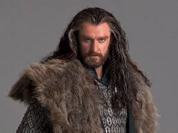
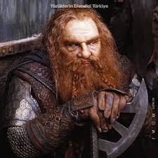
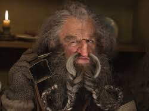
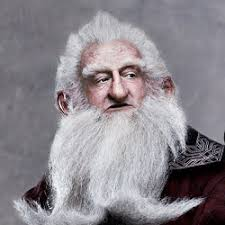
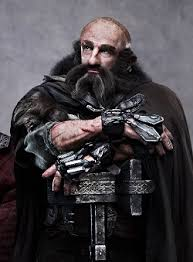
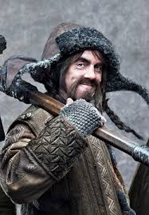
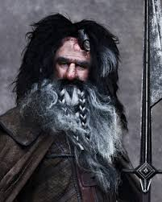

Thorin, üçüncü çağın 2746. yılında Yalnız Dağ'da (Erebor) doğdu. Ejderha Smaug'un Yalnız Dağ'ı ele geçirmesinin ardından babası Thrain ve dedesi Thror ile yan kapıdan kaçarak kurtuldu.
Uzun süre gençliği, gezgin bir halk olarak gezmesiyle geçti. Dedesinin Moria'da Azog tarafından öldürülmesinin ardından Cüce-ork savaşlarına ve bunun son muharebesi olan Azanulbizar Muharebesi'ne katıldı. Muharebede babası Tharin tek gözünü kaybetti ve aynı zamanda erkek kardeşi Frerin, Azog'un safları tarafından öldürüldü. Demir Tepeler (Iron Hills) kralı Nain'in tek çocuğu ve oğlu Dain, babasını da o muharebede öldüren Azog'u aynı yerde öldürdü.
Babası Thráin ortadan kaybolduktan sonra cücelerin ortak yüce kralı oldu. Uzun yıllar boyunca gezgin bir hayat sürdü. Halkı zenginleşti ve iyice güçlendi. Ama o Yalnız Dağ'daki mutlu günleri asla unutamadı. En Sonunda babasına kaybolduğu yolculukta eşlik eden Balin başta olmak üzere, seçilmiş cücelerden oluşan bir kafile kurdu. Shire'a bu kafile ile yerleşti ve planlar kurmaya başladı. Amacı Yalnız Dağ'ı geri almaktı.
Glóin (ÜÇ 2783 - DÇ 15, 253 yaşında), Óin'in kardeşi Gróin'in oğlu ve Yüzük Kardeşliği'nden Gimli'nin babası Durin Halkı'ndan bir cüceydi. En çok Thorin'in Erebor görevindeki yoldaşlarından biri olarak ünlüdür.
Glóin muhtemelen Durin soyu cücelerinin ÜÇ 2770'de Smaug tarafından Erebor'dan atılmalarından sonra sürgünde yaşadıkları Dunland'da doğdu. Glóin, Azanulbizar Savaşı'nda yer almıştı, bu garipti çünkü Cüceler otuzlu yaşlarında bile genç kişiler olarak görülüyordu, ancak o zamanlar (2799 ) Glóin 16 yaşındaydı. Savaştan sonra Glóin daha sonra Ered Luin'e giden Thorin'in takipçileri ile Dunland'a döndü.
Glóin'in Ered Luin'deki hayatı boyunca, Erebor'a geri dönmeye çalışan, ancak Thrór'un Yüzüğü için yakalanan ve işkence gören, bir kaç yıl sonra ise ölen Kral Thráin'in ayrılışını gördü. Kral Thorin yönetimi altında, dağlardaki Thorin'in Salonları'nda yaşayan Glóin ve diğer cüceler modaya uydular ve diğer insanlarla mal ticareti yaptılar ve kazanabildikleri kadar servet kazandılar. Ama asla Yalnız Dağ'dan söz etmediler.
IÓin (ÜÇ 2774 - 2994, 220 yaşında), Erebor'u ejderha Smaug'dan geri almak için yola çıkan Thorin ve Kafilesi'ndeki cücelerden biriydi. Daha sonra Balin'i Moria'yı geri almak için yaptığı başarısız bir girişimde takip etti.
Óin, Gróin'in oğlu ve Glóin'in ağabeyiydi. Aynı zamanda Gimli'nin amcasıydı.
Óin, Bag End'e gelen dördüncü gruptaki beş cüceden biriydi. Kahverengi bir başlık takıyordu. Her ikisi de kafilenin trollerle karşılaştığı gece başarısız olmalarına rağmen, Óin ve Glóin'in yangın başlatma yeteneklerine vurgu yapılmıştır. Hüsrana uğramaları sonucunda tartışmaya ve nihayetinde kavga etmeye başladılar, bu da grubu bir tepede görülen ateşe yönelmeye iten olaydı. Kurtların toplandığı orman açıklığında Óin, büyük bir çam ağacındaki oldukça rahat koltuklara tırmanan beş cüceden biriydi. Gandalf, Beorn'a kafilenin maceralarının hikayesini anlatırken, Óin ve Glóin, ortaya çıkan beşinci cüce ikilisiydi.
Balin, bir cüce lideri, Fundin'in oğlu ve Dwalin'in ağabeyi idi. Erebor'u geri almak için Bilbo Baggins ve Gandalf ile seyahat eden cücelerden biriydi. Bilbo Balin ile ilk tanıştığında, cüce beyaz bir sakal ve kırmızı bir başlıkla çok yaşlı görünüyordu.
Balin, Fundin'in oğlu olarak ÜÇ 2763'te doğdu. Yedi yaşındayken Smaug Yalnız Dağ'ı işgal etti. Cüceler 2770'te büyük kayıplarla sürüldükten sonra Balin ve babası Fundin, kralları Thrór ile Dunland'da yaşadı. İki yıl sonra kardeşi Dwalin doğdu
Fundin, Cüceler ve Orklar Savaşı'nda savaştı ve 2799'da Azanulbizar Savaşı'nda düştü. Balin bu savaşta mevcuttu, ancak rolü bilinmemektedir. Thráin II yönetimindeki Uzunsakallar ilk olarak Dunland'a yerleştiler, ancak kısa bir süre sonra Eriador'a taşındılar ve Mavi Dağlar'ı sömürgeleştirdiler.
Dwalin (ÜÇ 2772 - DÇ 91 [1]) Durin Halkı'ndan bir cüceydi. Abisi Balin ile birlikte, Erebor görevinde Thorin ve Kafilesi'nin bir üyesiydi. Dwalin macerada hayatta kaldı ve Dördüncü Çağ'da iyi yaşadı.
O doğmadan iki yıl önce, ejderha Smaug Erebor'a geldi [2] ve Kral Thrór'un krallığını yok etti. Thrór ve küçük bir grup akraba ve takipçisi güneye doğru ilerlerken, diğer Erebor Cüceleri Demir Tepeler'e kaçtı [3], böylece Dwalin sürgünde, belki de Dunland'da doğdu
Azanulbizar Savaşı'ndan sonra Thráin II ve Thorin kuzey Ered Luin'e yerleştiler [1] ve bir noktada Dwalin onlara katıldı.
Dwalin, kardeşi Balin ve diğer birkaç kişi ÜÇ 2841'de Erebor'u ziyaret etmek için Ered Luin'den ayrıldığında Thráin II'ye eşlik ettiler. Küçük grup Sauron'un elçileri tarafından takip edildi. 2845 yılında bir gece, o ve arkadaşları kara bir yağmurdan kaçmak için Mirkwood'un saçaklarının altına sığındıklarında Thráin yakalandı. Liderleri için sonuçsuz bir arayıştan sonra cüceler vazgeçip Thorin'e geri döndüler.
Bofur büyük olasılıkla Thráin II'nin kaybolmasından sonra Mavi Dağlar'da Thorin ile yaşadı. Bofur, ejderha Smaug'a meydan okumak için Erebor'a giden Thorin ve Kafilesi'nin on üç cücesinden biriydi. Smaug'un ölümünden sonra Bofur, Yalnız Dağ'da yaşadı.
Balin, Fundin'in oğlu olarak ÜÇ 2763'te doğdu. Yedi yaşındayken Smaug Yalnız Dağ'ı işgal etti. Cüceler 2770'te büyük kayıplarla sürüldükten sonra Balin ve babası Fundin, kralları Thrór ile Dunland'da yaşadı. İki yıl sonra kardeşi Dwalin doğdu
Fundin, Cüceler ve Orklar Savaşı'nda savaştı ve 2799'da Azanulbizar Savaşı'nda düştü. Balin bu savaşta mevcuttu, ancak rolü bilinmemektedir. Thráin II yönetimindeki Uzunsakallar ilk olarak Dunland'a yerleştiler, ancak kısa bir süre sonra Eriador'a taşındılar ve Mavi Dağlar'ı sömürgeleştirdiler.
Bifur büyük olasılıkla Thráin II'nin kaybolmasından sonra Mavi Dağlar'da Thorin ile yaşadı. Bifur, ejderha Smaug'a meydan okumak için Erebor'a giden Thorin ve Kafilesinin on üç cücesinden biriydi. Smaug'un ölümünden sonra Yalnız Dağ'da yaşadı
Bifur Moria Cüceleri soyundan geliyordu ama Durin'in soyundan değildi. [1] Bombur ve Bofur kardeşlerin kuzeniydi.
Bifur, en azından "elli yıl kadar" Fíli ve Kíli'den (d. ÜÇ 2859 ) daha yaşlıydı, ancak Balin'den daha gençti (d. 2763 ). [6] Bifur, 2763-2809 yılları arasındaki bir zamanda doğdu ve Kral Thorin'in Erebor'u geri almak için başlattığı göreve katıldığında 132 ile 178 yaşları arasında idi.
ÜÇ 2941'de, Bifur, Bag End'e ulaşan beşinci gruptaki dört cüceden biriydi ve sarı bir başlık giyiyordu. Ahududu reçeli ve elmalı tart istedi. Thorin'in müzik çağrısı yaptığı akşam Bifur (Bofur ile birlikte) klarnet çaldı
Warglar'ın orman açıklığındaki saldırısında Bifur, Bofur, Bombur ve Thorin ile bir çam ağacını paylaştı. Gandalf, Beorn'a maceralarını anlatırken, Bifur, Bofur ve Bombur ortaya çıkan son cücelerdi. Koşan nehir'den aşağı yapılan varil inişinden sonra Bifur ve Bofur varillerinden oldukça kuru bir şekilde çıktılar ve iyi durumdaydılar, ama uzanıp bir şey yapmayı reddettiler.